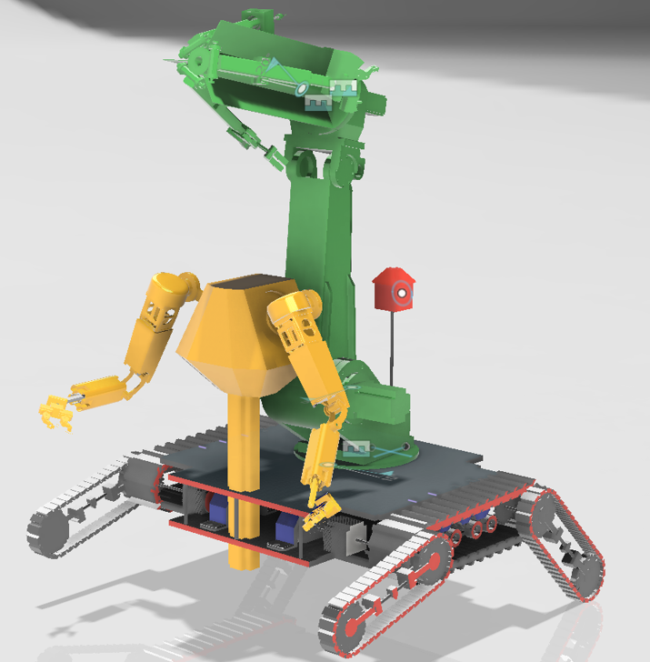
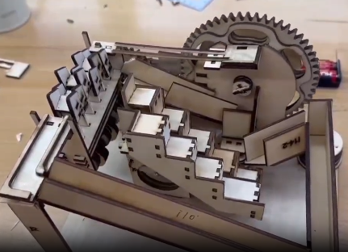
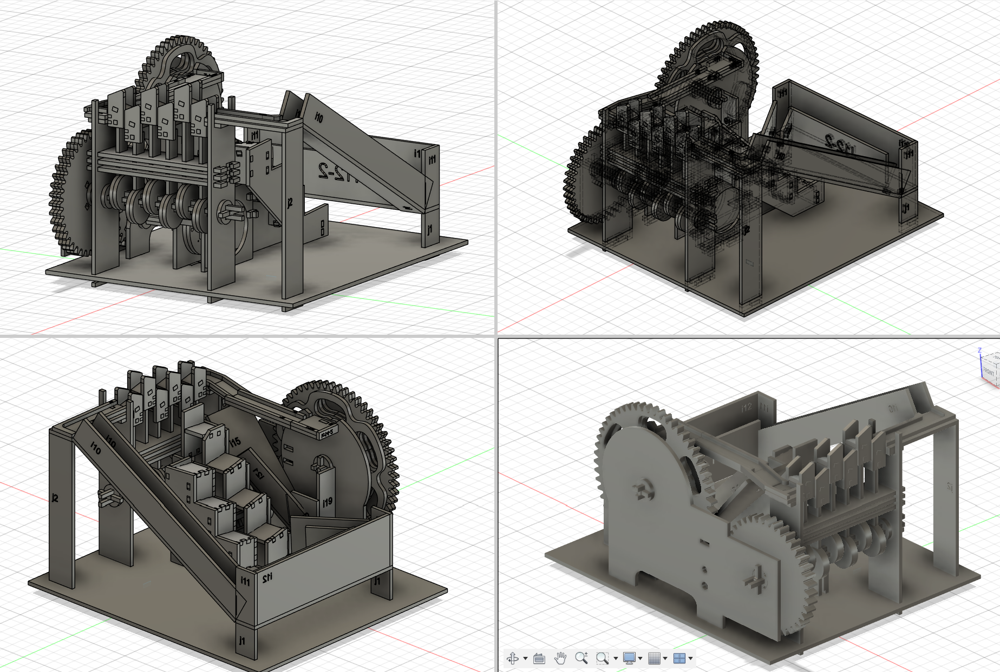

第一章
机械臂设计
这一方向在原始站点里主要以卡片、标题和图片的形式被保留下来。当前档案并没有留下更完整的长文说明，所以重构后选择把它作为一个简洁章节保留，而不是假装它原本就有更多资料。
机械项目档案
这一页整理了原始作品集中保留下来的早期机械项目：机械臂概念，以及信息更完整的轨道球案例。
第一章
这一方向在原始站点里主要以卡片、标题和图片的形式被保留下来。当前档案并没有留下更完整的长文说明，所以重构后选择把它作为一个简洁章节保留，而不是假装它原本就有更多资料。
第二章
轨道球是当前早期机械档案中最完整的一个案例。它的价值不只是“把模型做出来”，而是在激光切割、3D 打印、组装、测试和不断调试中，逐步把它推到真正可用的状态。
原始反思也说明，这个项目的难点并不是某一个局部 bug，而是一整套系统性问题：如何平面化切割零件、如何重组成三维运动结构、如何让上升结构工作、如何连接轨道、以及如何减少卡顿。
反思
从原始记录中最突出的，不是某一次成功，而是那种不断重打、重装、重测的过程。也正因为如此，这个项目到现在仍然值得留在作品集中。
演示视频
从 `project1` 文件夹整理进来的录屏，放在机械项目 1 右侧媒体区的最前面。
机械臂

机械臂方向在档案中保留下来的主要视觉材料。
轨道球视频
轨道球项目在制作和调试过程中的视频记录。
轨道球图片


用于记录项目接近完成状态的图片材料。